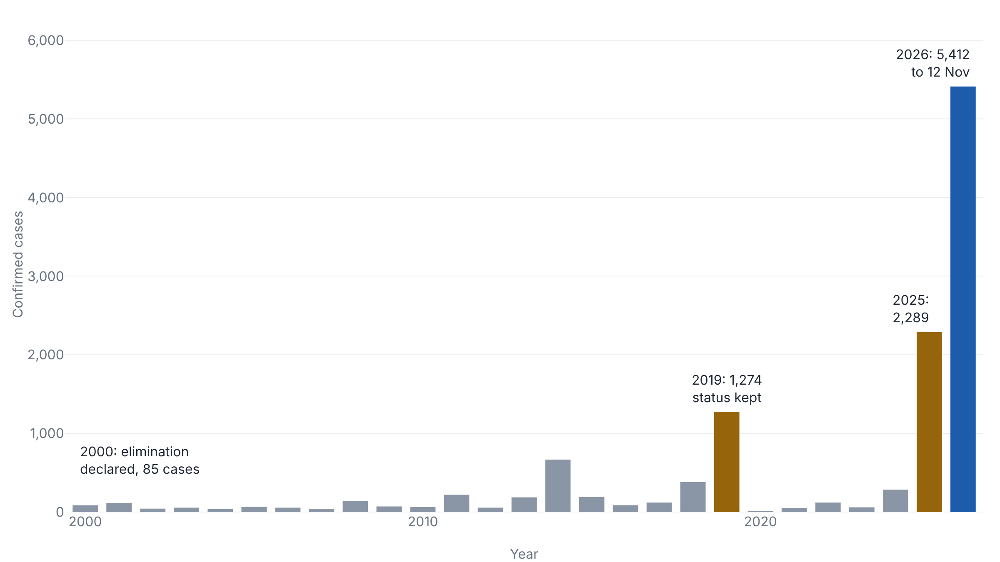

The measles chain that ran a full year is Utah’s
Reported before PAHO has announced it, the US loss of measles elimination follows a Utah outbreak that only a disputed reading of genomes ties to Texas.
The test is 12 months on one chain
A country loses its measles elimination status with the Pan American Health Organization when a transmission chain carrying the same virus genotype and lineage runs uninterrupted for 12 months or more.1 For the United States that window opened on 20 January 2025, the onset date PAHO gives for the US outbreak.1 On Friday 13 November the Wall Street Journal reported that the reviewing commission had put the country over that line, and CNN matched it that day from its own source.23 KFF Health News followed on 14 November, citing researchers with direct knowledge, and said an announcement was planned for 17 November.4 PAHO has announced no decision. The latest items on its news index, dated 9 to 13 November, include nothing on measles.5
The CDC has confirmed 5,412 cases this year, against 2,289 in all of 2025.6 Totals are not the test: the 1,274 cases of 2019 left elimination standing.

Utah’s outbreak has run since June 2025
On 19 June 2025 the Utah Department of Health and Human Services was told of a PCR-positive case in an unvaccinated Utah County adult. The department wrote that the person had “no out-of-state exposures which indicates the infection was transmitted within Utah”, with no other case known.8 A department that can find neither a source case nor an importation has recorded transmission nobody saw.
That outbreak has not stopped. Utah counts 725 cases across both years, 528 in 2026, and has not declared it over.9 It passed 12 months in June 2026. Noel Brewer chairs the national committee that certifies the CDC’s elimination report and sends PAHO’s commission its own opinion. Writing in STAT in August, he put the Utah outbreak past 12 months and called that “the main criterion for loss of elimination”.10 Utah’s laboratory sequenced about 65% of reported cases and clustered them at a single base difference.11 The preprint found several introductions into Utah, one accounting for most cases. CNN, which read it, reports one strain in more than 95% of Utah cases, and more than 600 from June 2025 to June 2026.3
Twelve bases between Texas and Utah
The West Texas outbreak reached 762 cases, killed two school-aged children and was declared over on 18 August 2025.12 The published case for joining it to Utah is genomic, and it is ProPublica’s. Its analysis of more than 1,800 published genomes of genotype D8 found the first Texas genome and a May 2026 Utah genome differing at 12 of about 16,000 positions. A Texas virus had picked up five of those by May 2025, and a virus carrying the same five turned up in Utah that June. CDC-published sequences from Iowa, North Dakota, Minnesota and Alaska carry them too, collected that May and June.15
Federal officials said the opposite in public. Jim O’Neill, then acting CDC director, posted in November 2025 that a preliminary analysis did not directly link the Utah and Arizona cases to Texas.16 An HHS spokesperson told the Associated Press in January 2026 that the department had no evidence of a single chain spreading for a year.17 The Texas health department’s own analysis of 368 genomes finds Utah and Arizona genomes related to Texas but with “heterogeneous phylogenetic placement”, and says sampling gaps “prevented definitive inference of geographic origin or transmission direction”.18 A CDC spokesperson told ProPublica: “Sequencing alone cannot determine whether transmission has been continuous or sustained.”15
Which chain the CDC traced is not public
The commission met behind closed doors from 10 to 13 November. Its own notice says no single source of evidence determines a classification.19 Brewer presented the CDC’s status report and his committee’s assessment there on 10 November. That report is confidential. Reuters quotes a source familiar with the CDC’s findings: the agency found 12 months of continuous transmission. Neither account names the chain.2
| Chain | What joins it |
|---|---|
| Utah and Arizona | From 19 June 2025. Utah’s sequencing, and Arizona’s account of one outbreak across the border. Crossed 12 months in June 2026. |
| Texas to Utah | From 20 January 2025. ProPublica’s genomic inference. Disputed by CDC leadership and HHS, left open by the Texas laboratory’s paper. |
| South Carolina | October 2025 to March 2026, about five months. 997 cases on a distinct sublineage. |
Getting the status back takes the same calendar in reverse: 12 consecutive months with no endemic chain, the condition PAHO set for Canada a year ago.20 Utah reported one diagnosis in the three weeks to 10 November. PAHO’s 5 November situation report, adjusting for reporting delay, puts the national reproduction number at 1.49 (95% credible interval 1.42 to 1.57), with transmission highest in northeastern states.21
Sources
- PAHO · Review of US measles elimination status
- Reuters · US loses measles-free status, WSJ reports
- CNN · The US has lost its elimination status
- KFF Health News · US measles elimination status lost
- PAHO · News index, 15 November 2026
- CDC · Measles cases and outbreaks
- CDC Stacks · Measles cases and outbreaks, archived 2024
- Utah DHHS · Health Alert Network 06202025
- Utah DHHS · Measles response page
- Noel T. Brewer, STAT · What the review weighs
- Jewell et al., medRxiv · Utah measles genomic epidemiology
- Texas DSHS · End of the West Texas outbreak
- Arizona DHS and Mohave County · Outbreak declared over
- South Carolina DPH · End of the Upstate outbreak
- ProPublica · Measles genomes from Texas to Utah
- NBC News · The Arizona and Utah outbreaks
- AP via PBS NewsHour · On the verge of losing elimination
- Juntawong et al., EID 32(10) · West Texas genomic surveillance
- PAHO · Re-verification commission, sixth meeting
- PAHO · The Americas lose measles elimination status
- PAHO · Measles situation report 15, 5 November 2026